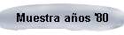
Grupo en Polonia
Disueltos los talleres del TiT, Marinho (Marco Sadowski) viajó a Polonia, donde se estableció (nació en Brasil pero su padre era polaco).
Allí formó un grupo con los postulados titeanos llamado Viaje sin pasaporte (Taller teatral abierto).
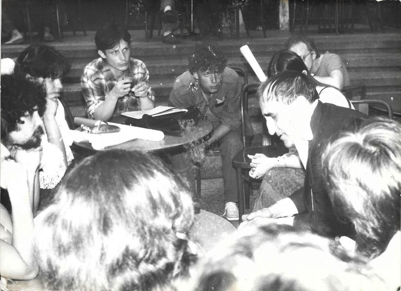
Arriba: de barba, a la izquierda, Marinho en una reunión del grupo con el famoso director y teórico polaco de teatro Tadeusz Kantor, quien a principios de los '70 creó el Centro de investigaciones teatrales junto a Juan Uviedo, Peter Brook y Jerzy Grotowski. Debatían la redacción de un manifiesto.
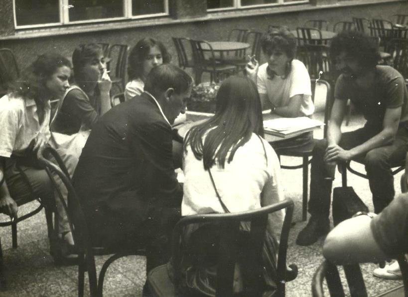
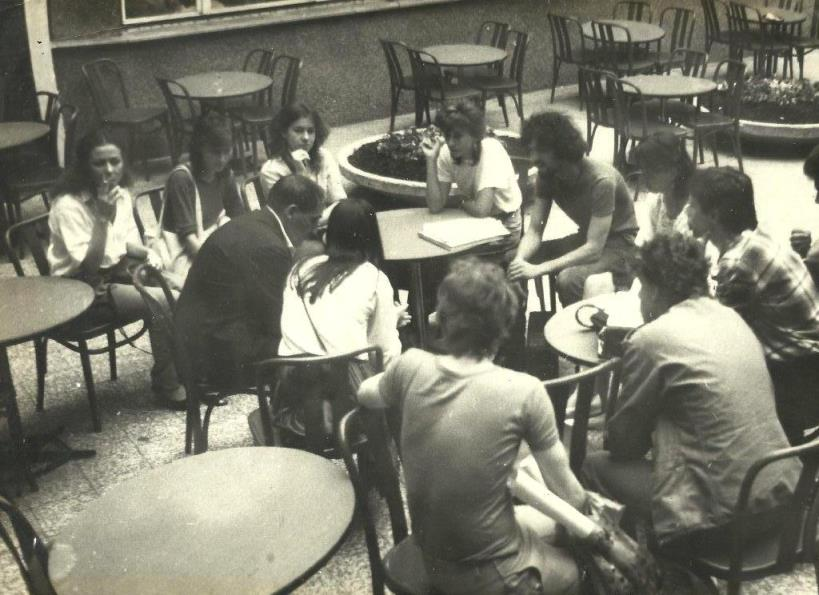
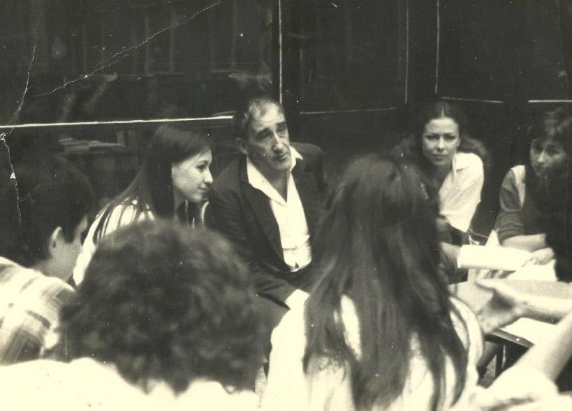
Abajo: fotos del montaje relizado por el grupo en 1984, cuyas consignas eran Imaginación, subversión y defensa.
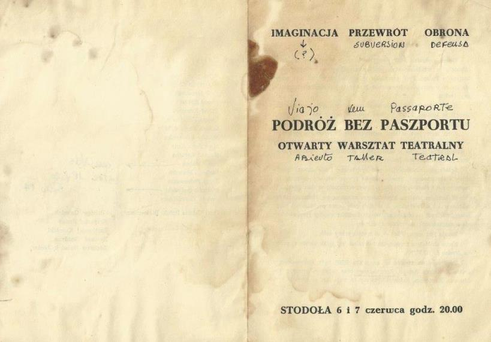
En el interior del cuadernillo que se entregaba al público se nombraba al Zangandongo.
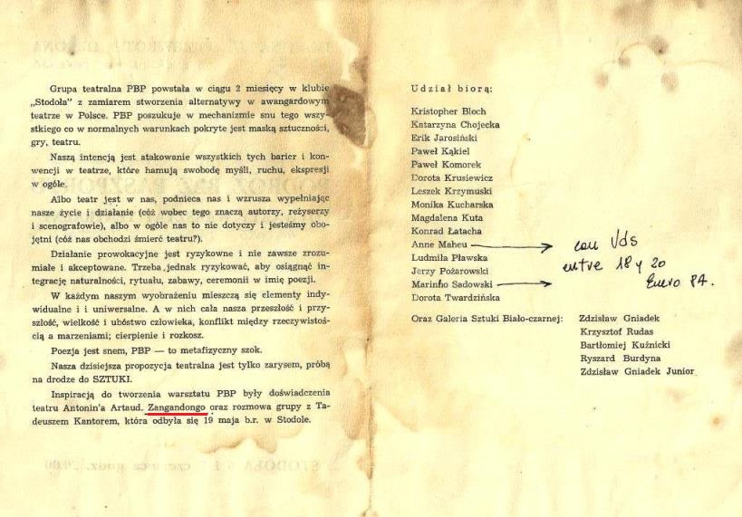
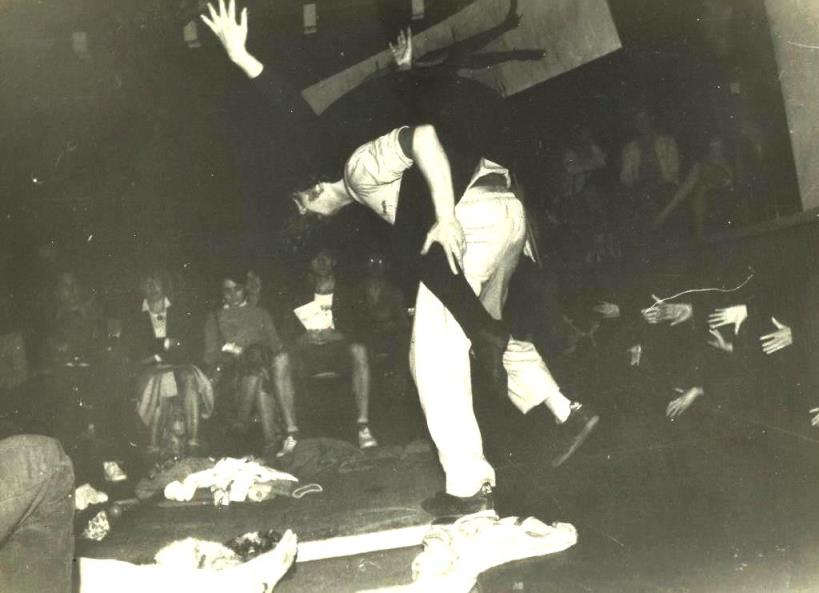
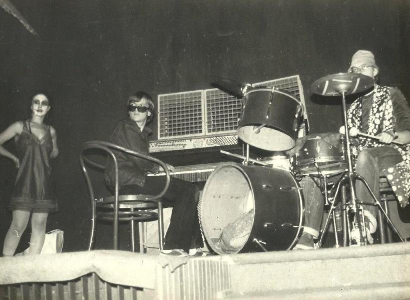
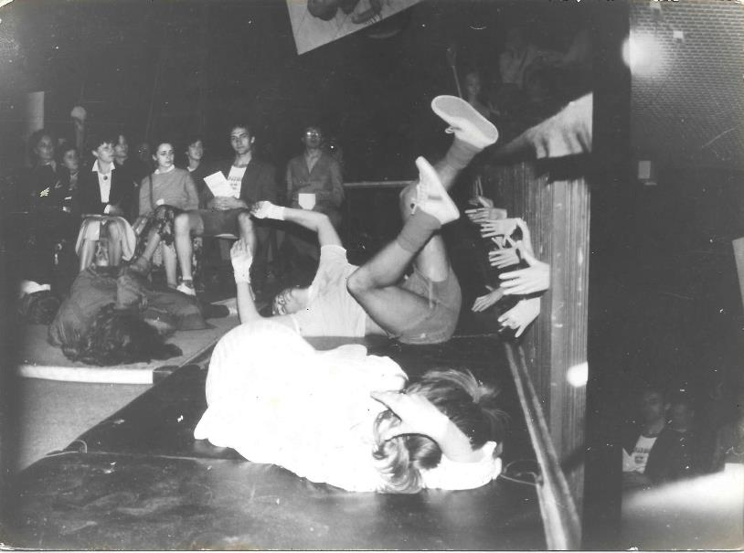
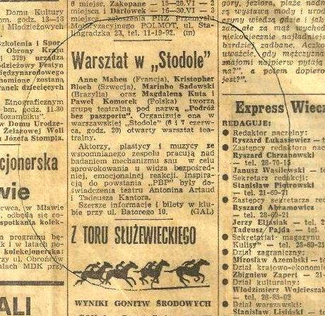
Nota sobre el montaje en un diario polaco.